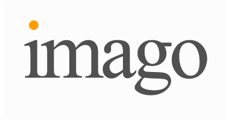

Imago is everything
zondag 12 december 2004 | Updates

zondag 12 december 2004 | Updates

Frederik Vandaele op 12 december 2004
Merci ;-)
Maar de credits gaan evengoed naar mijn vriend en Imago-medewerker Kasper: http://blog.zappatic.net
JefPober op 12 december 2004
Kasper, post ook een item derover dan kan ik daarop “wow, amazing job!” replyen :-)
Kasper op 12 december 2004
Ok, is gebeurd !
ps: Fre, ik heb uwe gif schaamteloos gestolen. sue me :p
Michaël De Graeve op 13 december 2004
Je beseft toch dat dit in het Engels waarschijnlijk als /ai'meego/ wordt uitgesproken, of in het beste geval als /'imidjo/? ;-)
Frederik Vandaele op 13 december 2004
“aimigo”? Lijkt me ideaal!
Ik weet het, ik weet het: de naam is niet wat het zijn moet. Het was een 'werknaam' en zoals dat vaak gebeurt, wordt dat dan ook de echte naam.
Het product staat er in ieder geval, en daar zijn we heel trots op.
Michaël De Graeve op 13 december 2004
Tuurlijk, het product straalt innovatie en creativiteit uit. Mogen de ondernemersgoden u vriendelijk toelachen!
Frederik Vandaele op 13 december 2004
En vooral de vrijetijds- en kennisgoden.
Roel op 14 december 2004
Heel mooi. Misschien moet ik ook eens een fotocursus gaan doen, echte foto's leren maken met die Olympus OM-1, en dan vervolgens op naar World DOmination via Imago! ;-)
Frederik Vandaele op 14 december 2004
Hier alvast een goede start: http://home2.pi.be/rv047190...
ine op 15 december 2004
Knap ding.
Vraagjes: met wat plaatsen jullie het watermerk erin? En hoe verkleinen jullie tot die verticale thumbs?
Is soms interessant voor mijn tool.
Tx.
Ine
Roel op 16 december 2004
Hoi Frederik,
Vriendelijk bedankt voor de link naar de Cursus Natuurfotografie. Ik heb 'em gedownload, en het ziet er veelbelovend uit!
JefPober op 12 december 2004
wow, knap werk!